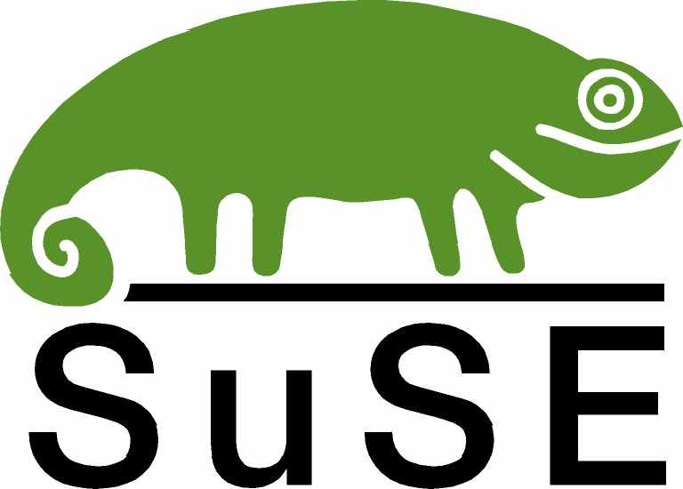

Those who have heard of Novell remember it for their proprietary, server-oriented operating system known as NetWare. The product never gained critical mass and soon lost out to IBM and Microsoft.3
However, Novell acquired German Linux distributor SuSE in 2003 for $210 million, and the company has since refocused itself on Linux and the free software movement.
While Red Hat has concentrated on data centers, Novell is targeting business desktops, which need directory services, management tools, and Microsoft compatibility. Novell's experience with NetWare and its other products gives it the institutional knowledge necessary to understanding how to meet the needs of enterprises through free software.
This merger appears to be working fairly well and Novell is a well-respected company in the free software community. SuSE is one of the most popular Linux distributions, but like Red Hat, they have separate community and enterprise versions, and communities, that is potentially stunting their growth.